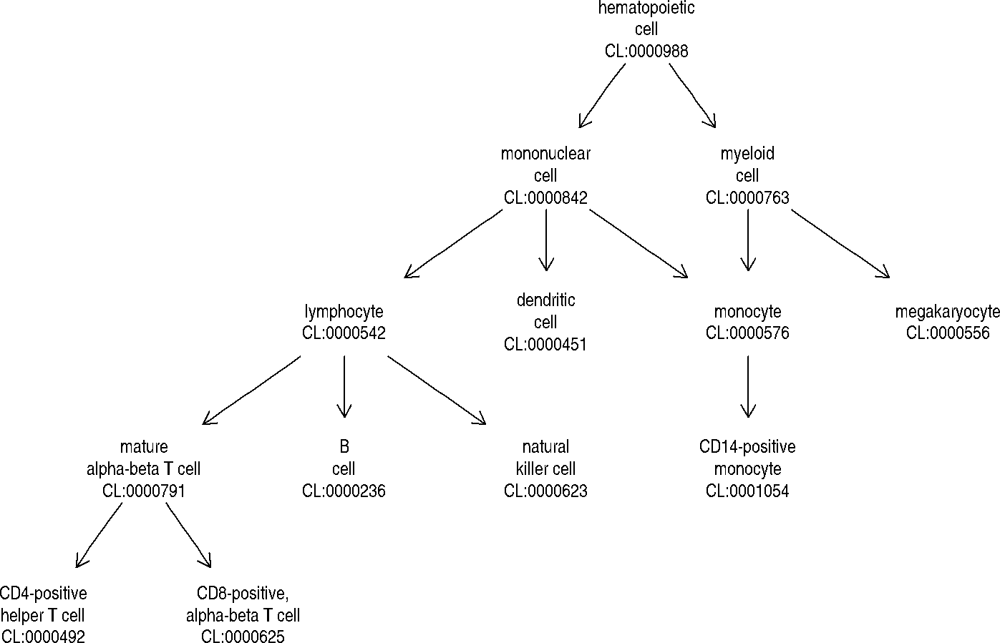

onto2022 for Bioc 2022
Vincent J. Carey, stvjc at channing.harvard.edu
July 29, 2022
onto2022.RmdThanks to Sara Stankiewicz of Channing Division of Network Medicine for technical assistance in the maintenance of ontoProc
Introduction: ontologies for information science
- Systematic controlled and versioned vocabularies with fixed-length tags
- Relationships among terms and term referents are formally defined
- Languages or markups for defining and computing with ontologies:
- RDF/OWL
- OBO (stanzas)
- Tools for manipulating and using ontologies
- R ecosystem: ontologyIndex, rols, glitter (RDF querying)
- Protege
- ROBOT, pronto
Two applications
- Precise characterization of phenotypes in GWAS
- Cell type identification with scRNAseq
GWAS
We’ll look at two GWAS resources that use ontologies in the characterization of traits.
gwascat
EBI produces a catalog of GWAS results, retaining those that are significant and validated.
suppressPackageStartupMessages({
library(onto2022)
})## Creating a new generic function for 'tabulate' in package 'VariantAnnotation'## API: public: http://gwas-api.mrcieu.ac.uk/## gwasloc instance with 379589 records and 38 attributes per record.
## Extracted: 2022-07-29
## metadata()$badpos includes records for which no unique locus was given.
## Genome: GRCh38
## Excerpt:
## GRanges object with 5 ranges and 3 metadata columns:
## seqnames ranges strand | DISEASE/TRAIT SNPS P-VALUE
## <Rle> <IRanges> <Rle> | <character> <character> <numeric>
## [1] 4 81239194 * | Waist circumference .. rs2197271 1e-06
## [2] 3 172204265 * | Waist circumference .. rs12493901 3e-08
## [3] 17 30920697 * | Waist circumference .. rs3760318 1e-07
## [4] 14 91962066 * | Waist circumference .. rs2160077 7e-08
## [5] 17 61417213 * | Waist circumference .. rs882367 6e-07
## -------
## seqinfo: 24 sequences from GRCh38 genome
mcols(newcat[1,])$MAPPED_TRAIT_URI## [1] "http://www.ebi.ac.uk/efo/EFO_0004318, http://www.ebi.ac.uk/efo/EFO_0007789"EFO is experimental factor ontology. We have a copy (likely somewhat out-of-date) in the ontoProc package.
efo = getEFOOnto()## snapshotDate(): 2022-04-21## loading from cache
efo$name["EFO:0007789"]## EFO:0007789
## "BMI-adjusted waist circumference"ieugwasr
The Bristol Integrative Epidemiology Unit curates a large collection of summary statistics for many GWAS.
## # A tibble: 42,334 × 22
## id trait note group…¹ mr year author sex pmid popul…² unit
## <chr> <chr> <chr> <chr> <int> <int> <chr> <chr> <int> <chr> <chr>
## 1 ieu-b-5075 Syst… NA public 1 2021 Sakau… Male… 3.46e7 East A… mmHg
## 2 ieu-b-5064 Seps… HES … public NA 2021 Hamil… Male… NA Europe… logOR
## 3 eqtl-a-EN… ENSG… NA public 1 2018 Vosa U Male… NA Europe… NA
## 4 ukb-b-1489 Chee… 1408… public 1 2018 Ben E… Male… NA Europe… SD
## 5 ukb-b-8727 Age … 2764… public 1 2018 Ben E… Male… NA Europe… SD
## 6 ukb-a-583 Diag… NA public 1 2017 Neale Male… NA Europe… SD
## 7 eqtl-a-EN… ENSG… NA public 1 2018 Vosa U Male… NA Europe… NA
## 8 ukb-b-124… Trea… 2000… public 1 2018 Ben E… Male… NA Europe… SD
## 9 ukb-e-767… Leng… NA public 1 2020 Pan-U… Male… NA East A… NA
## 10 eqtl-a-EN… ENSG… NA public 1 2018 Vosa U Male… NA Europe… NA
## # … with 42,324 more rows, 11 more variables: sample_size <int>, nsnp <int>,
## # build <chr>, category <chr>, subcategory <chr>, ontology <chr>,
## # ncase <int>, consortium <chr>, ncontrol <int>, priority <int>, sd <dbl>,
## # and abbreviated variable names ¹group_name, ²population
## # ℹ Use `print(n = ...)` to see more rows, and `colnames()` to see all variable names##
## EFO:0003106 MONDO:0007254 HP:0100806 EFO:0006859 EFO_0007937
## 4 4 5 7 1124
## NA
## 41074Cell ontology
The SingleR book of Aaron Lun provides basic motivation and examples.
Motivation
We can explore Cell Ontology interactively using Web Protege:

Protege view
Of note are the additional annotations, relating the cell type to plasma membrane proteins.
Ontological DAG for cell types
Visualizing the derivation of some types of interest:
cl = getCellOnto()
head(cl$name)## BFO:0000002 BFO:0000003 BFO:0000004
## "continuant" "occurrent" "independent continuant"
## BFO:0000006 BFO:0000015 BFO:0000019
## "spatial region" "process" "quality"
cl3k = c("CL:0000492", "CL:0001054", "CL:0000236", "CL:0000625",
"CL:0000576", "CL:0000623", "CL:0000451", "CL:0000556")
onto_plot2(cl, cl3k)
Use ctmarks(cl) for interactive visualization of a subset of cell types of interest: those for which plasma membrane protein relationships have been encoded.
Latest Common Ancestor
parents <- cl$parents
self <- rep(names(parents), lengths(parents))
suppressPackageStartupMessages({
library(igraph)
})
g <- make_graph(rbind(unlist(parents), self))
g## IGRAPH 136776e DN-- 9886 15674 --
## + attr: name (v/c)
## + edges from 136776e (vertex names):
## [1] BFO:0000002 ->BFO:0000004 BFO:0000141 ->BFO:0000006
## [3] BFO:0000003 ->BFO:0000015 BFO:0000020 ->BFO:0000019
## [5] BFO:0000002 ->BFO:0000020 BFO:0000040 ->BFO:0000024
## [7] BFO:0000040 ->BFO:0000030 BFO:0000002 ->BFO:0000031
## [9] BFO:0000004 ->BFO:0000040 BFO:0000004 ->BFO:0000141
## [11] CARO:0030000->CARO:0000000 CARO:0000006->CARO:0000003
## [13] BFO:0000040 ->CARO:0000006 CARO:0000000->CARO:0000006
## [15] CARO:0000003->CARO:0001000 CARO:0001000->CARO:0001001
## + ... omitted several edgesA very general approach to finding “common ancestors” can be used to “roll up” fine-grained assignments, allowing combination of differentially annotated collections.
lca = findCommonAncestors(A="CL:0000860", B="CL:0001022", g=g)## Warning: The dim() method for DataFrameList objects is deprecated. Please use
## dims() on these objects instead.## Warning: The nrow() method for DataFrameList objects is deprecated. Please use
## nrows() on these objects instead.## Warning: The ncol() method for DataFrameList objects is deprecated. Please use
## ncols() on these objects instead.
lca## DataFrame with 1 row and 2 columns
## number descendents
## <integer> <DataFrameList>
## CL:0000576 2 TRUE:FALSE,FALSE:TRUE
cl$name[rownames(lca)]## CL:0000576
## "monocyte"